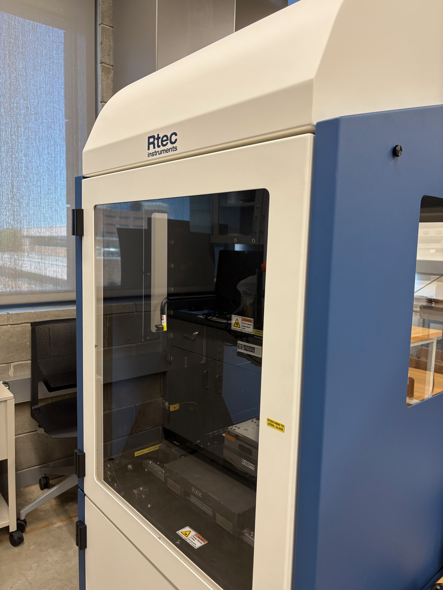
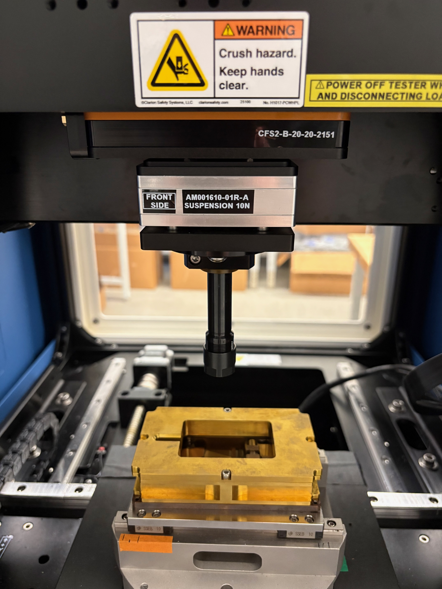

RTEC MFT-5000 Multifunctional Tribometer
Rotary and reciprocating tribological testing under dry, lubricated, and corrosive environments, including friction and wear, lubricant evaluation, rolling contact fatigue, and tribocorrosion.
Rotary: 0.001–10,000 rpm Reciprocating: up to 80 Hz Load: up to 1,000 N Temperature: up to 500 °C